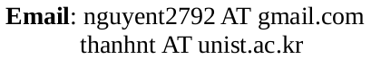

Thanh Tang NGUYEN
more images
Statistical Artificial Intelligence Lab
School of Computer Science and Engineering
Ulsan National Institute of Science and Technology
Room 704, Engineering Building 106
50, UNIST-gil, Ulsan 44919, Republic of Korea

[
CV
] [
Github
] [
Blog
] [
Google Scholar
]
Keywords: Machine Learning (ML), Artificial General Intelligence (AGI)
News
2017/11/30: I defended my Master thesis with Prof. J. Choi, Prof. S. Y. Chun and Prof. J. Moon.
Research Space
General-purpose ML methods:
Deep Learning
Information-Theoretical Approachs
Probabilistic Modeling and Inference
Reinforcement Learning
Application domain:
Natural Language Processing (NLP)
Computer Vision
Others
Education
M.Sc. in Computer Science and Engineering ,
Ulsan National Institute of Science and Technology (UNIST)
, Korea (Mar. 2016 - Mar. 2018) (GPA: 4.3 / 4.0)
B.Sc. in Electronic and Communication Engineering,
Danang University of Science and Technology
, Vietnam (Sep. 2010 - Jul. 2015) (Valedictorian)
Experience
Researcher at
Statistical Artificial Intelligence Lab
, UNIST (Mar. 2018 -
present
)
Research Assistant and Teaching Assistant at
Statistical Artificial Intelligence Lab
, UNIST (Mar. 2016 - Mar. 2018)
Projects
Deep Learning based Real-Time Pedestrian Detection for CCTV
. In NIPA project, 2016.
[Wed Demo]
Lesion Dermoscopic Feature Segmentation
(Ranked 1st) and
Lesion Segmentation
(Ranked 8th) . In ISBI 2016: Skin Lesion Analysis Towards Melanoma Detection, 2016.
[Code]
[Link]
Activities
2017/11/15-17: Attended
the Asian Conference in Machine Learning (ACML) 2017
, Seoul, Korea.
2017/11/02-03: Attended
the International Symposium on Perception, Action, and Cognitive Systems (PACS)
, Seoul, Korea (
Best Poster Award
for our PIB
).
2016/06/02-03: Attended
the First Korea-Japan Machine Learning Symposium
, Seoul, Korea.
Talks
2018/04/30:
Parametric Information Bottleneck
. The 2nd SAIL@UNIST Workshop
[slide]
Publications
[Master Thesis]
T.T. Nguyen
.
Parametric Information Bottleneck to Optimize Stochastic Neural Networks
. In
ScholarWorks@UNIST
, 2018.
[Preprint]
T.T. Nguyen
, and J. Choi.
Layer-wise Learning of Stochastic Neural Networks with Information Bottleneck
. In
arXiv 1712.01272
, 2017.
[TR]
T.T. Nguyen
, D. Nguyen, and S. J. Hwang.
Learning to Attend Relevant Regions in Videos from Fixations
.
Technical Report
, 2016.
Last updated: 04 Oct 2018.
Special thanks to Dr.
Dat Quoc Nguyen
for the (written) permission of adopting his blog template.